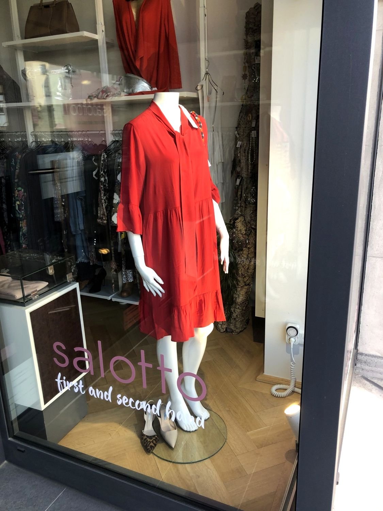
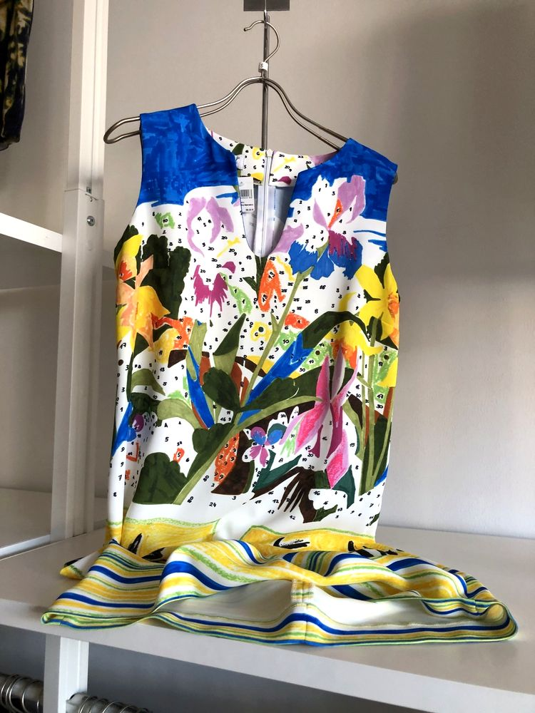
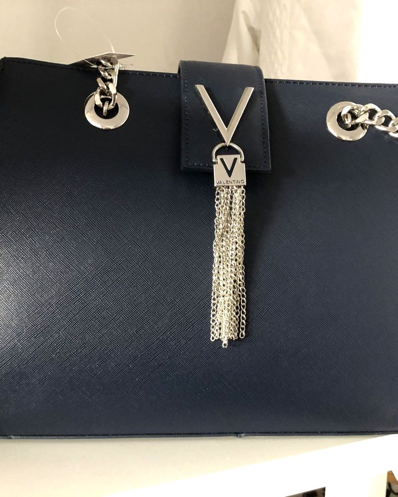
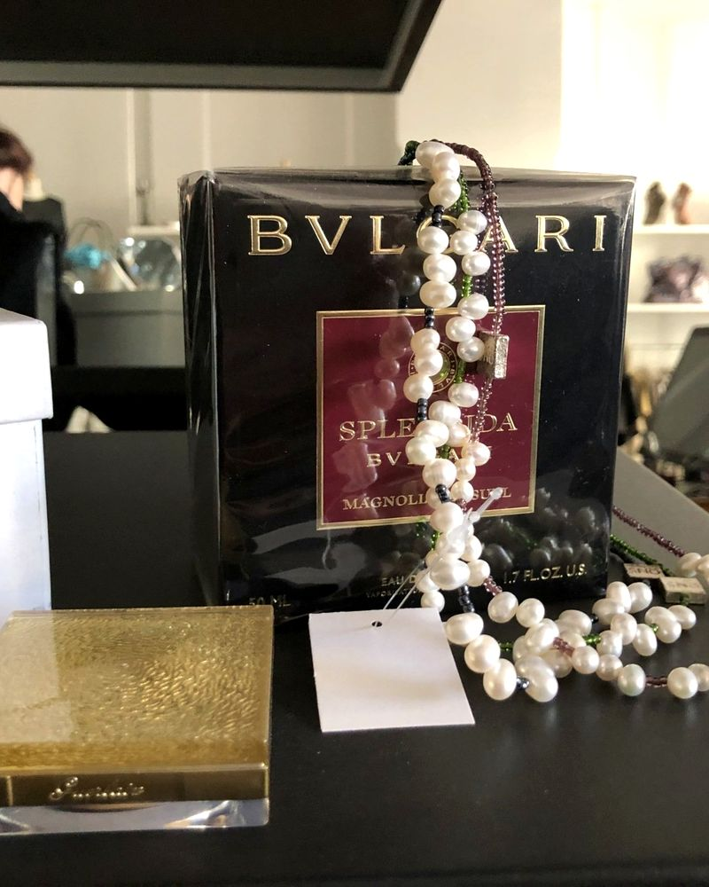
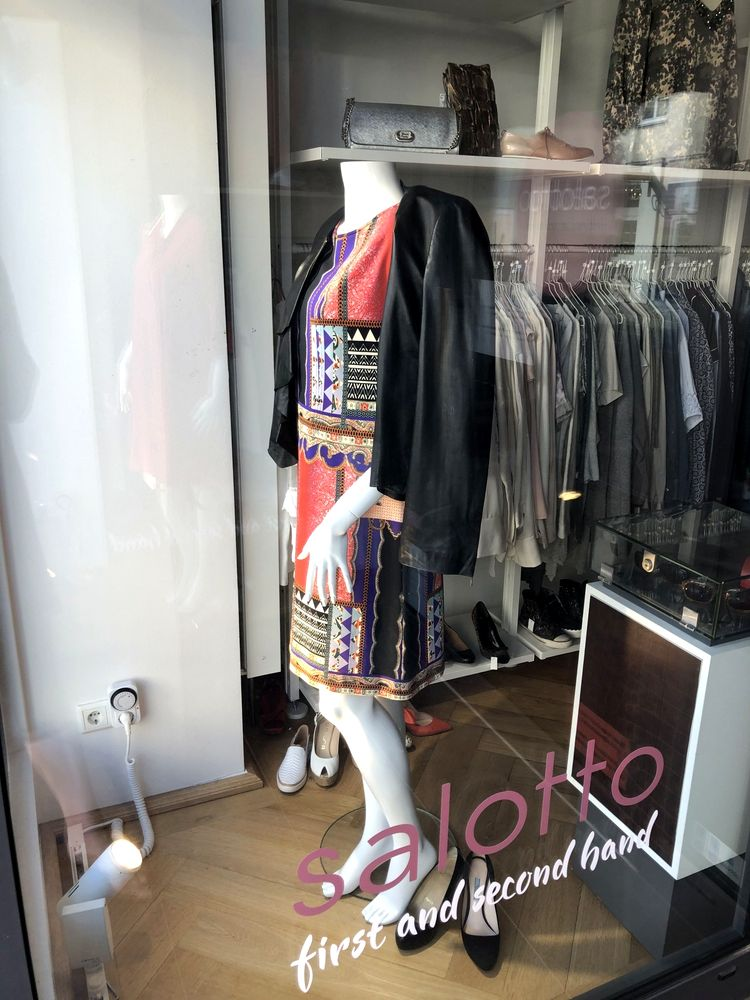
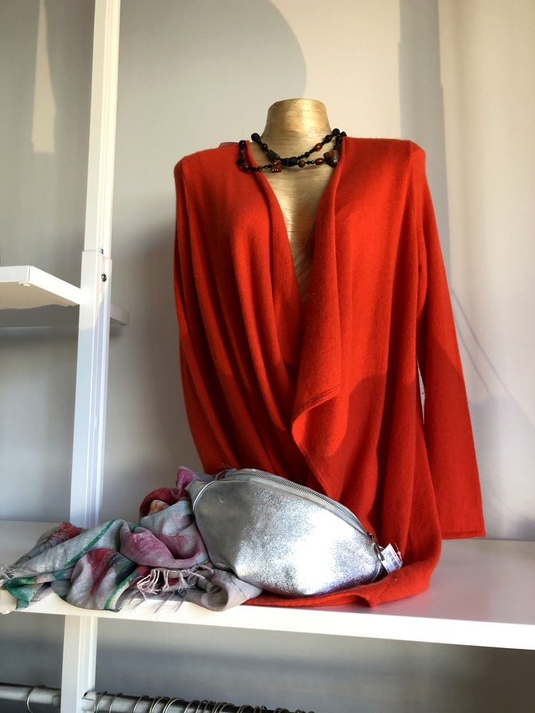
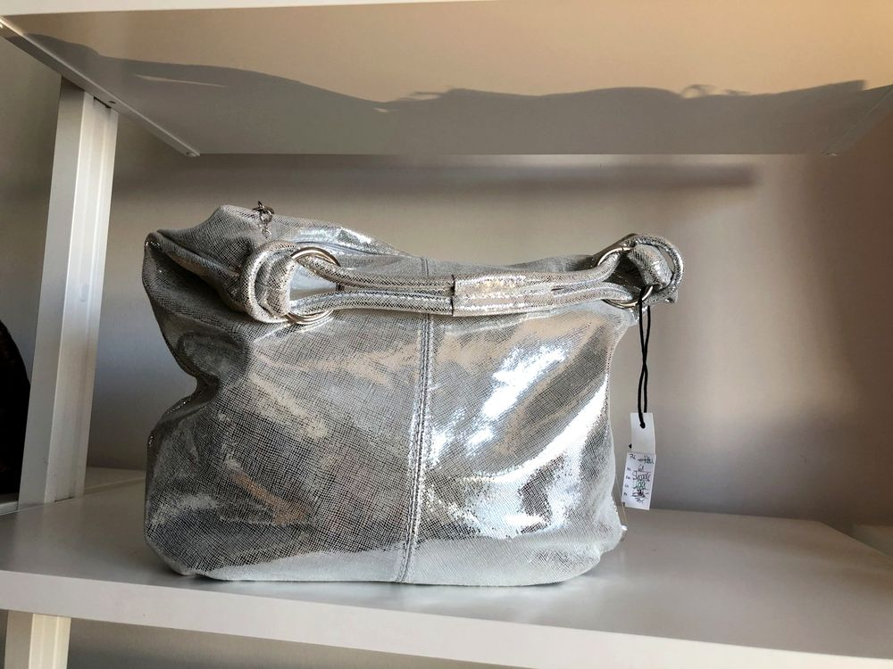
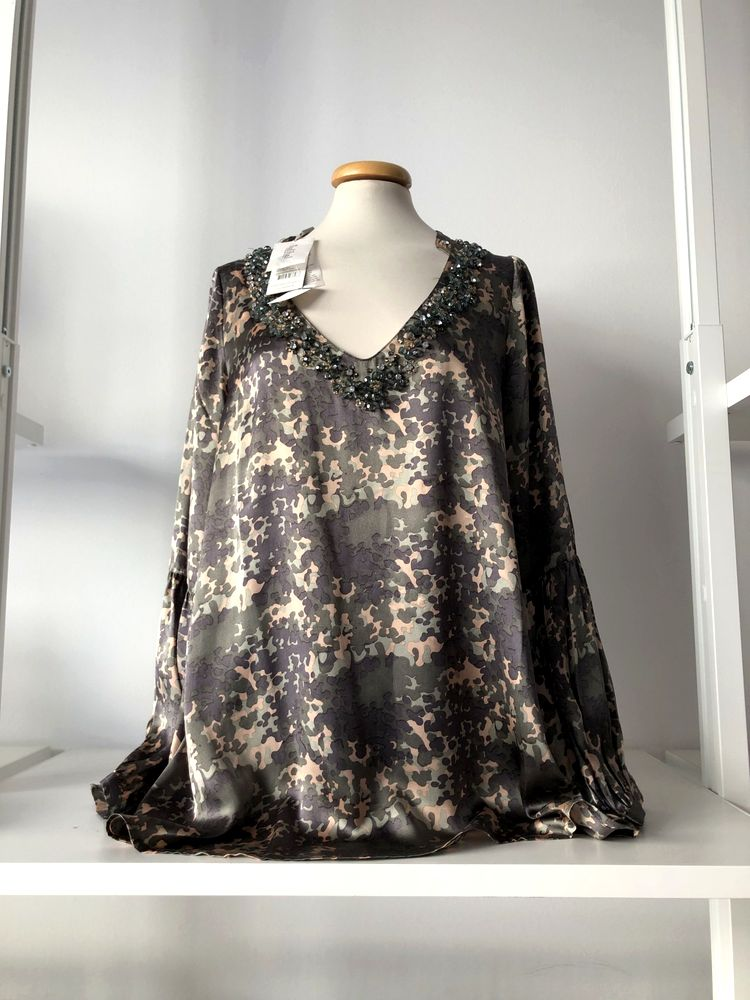
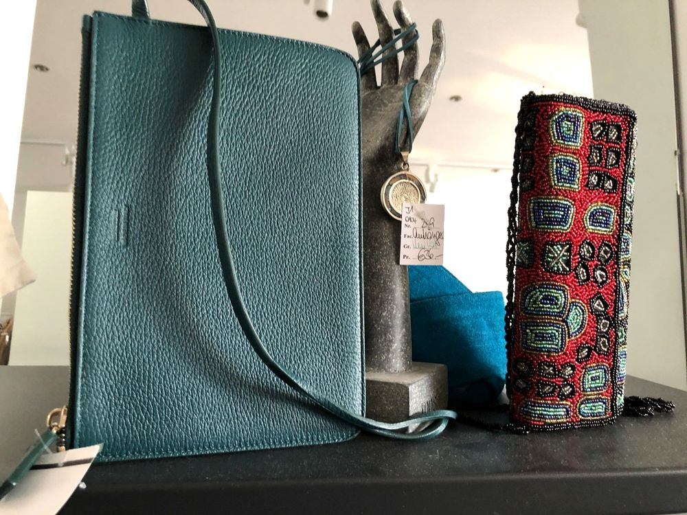
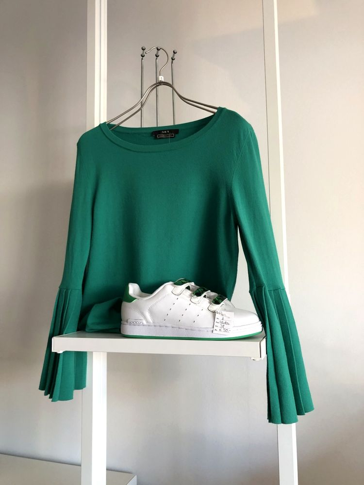

First Hand
Ausgewählte Stücke aus aktuellen Kollektionen – neu, mit Etikett, in kleiner Stückzahl.
Designer-Mode, first & second hand.
Ausgewählte Damenmode, Handtaschen, Schuhe und Vintage-Stücke – mitten in Rosenheim, in der Innstraße 14.
Di–Fr 10–18 Uhr · Sa 10–14 Uhr
Jedes Teil ist handverlesen. Vieles gibt es nur einmal – ein Besuch lohnt sich immer wieder.

Designer-Damenmode, aktuelle Kollektionsstücke und geliebte Vintage-Teile.

Exklusive Handtaschen namhafter Häuser – gepflegt und sorgfältig geprüft.

Tücher, Gürtel, Schmuck und die kleinen Dinge, die ein Outfit fertig machen.
Edle Damenschuhe – vom Pumps bis zum Stiefel.
Ausgewählte Stücke aus aktuellen Kollektionen – neu, mit Etikett, in kleiner Stückzahl.
Designerteile mit Geschichte: geprüft, gepflegt und zu einem fairen Preis. Nachhaltig schön.
„Salotto“ ist italienisch und heißt Salon – ein Ort, an dem man gerne verweilt.
Genau so soll sich ein Besuch bei uns anfühlen: Sie stöbern in Ruhe, probieren an und bekommen ehrliche Beratung. Wir bieten eine große Auswahl an hochwertiger Designer-Damenmode, exklusiven Handtaschen, edlen Schuhen, außergewöhnlichen Accessoires, geliebten Vintage-Teilen und ausgewählten Kollektionsstücken.
Petra KrapfInhaberin
Innstraße 14
83022 Rosenheim
Der Routen-Link öffnet Google Maps in einem neuen Fenster. Auf dieser Website selbst werden keine Karten, Tracker oder Cookies geladen.
| Montag | geschlossen |
|---|---|
| Dienstag | 10:00 – 18:00 |
| Mittwoch | 10:00 – 18:00 |
| Donnerstag | 10:00 – 18:00 |
| Freitag | 10:00 – 18:00 |
| Samstag | 10:00 – 14:00 |
| Sonntag | geschlossen |





